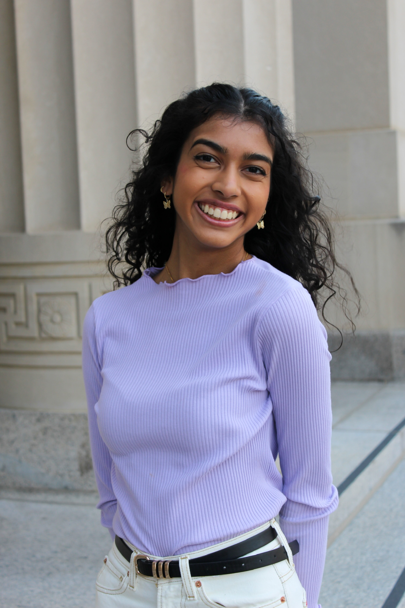
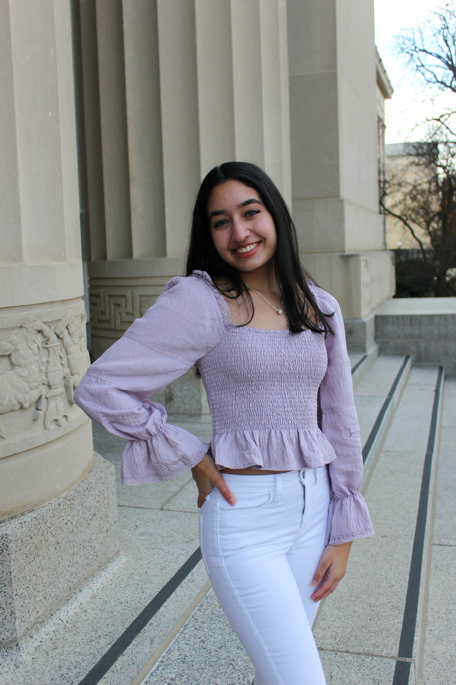

Juhi is from the Bay Area, CA and is one of our lovely captains for 2021-22. She is a senior studying Biology, Health, and Society and Gender and Health, and this is her fourth year on Taal! Her favorite spot in AA is the Kerrytown Farmers Market and her go to karaoke song is You Belong with Me! If she could be a kitchen appliance she would be an ice cream scoop because she loves to make sure everyone is having a fun time. Her favorite memory on Taal is making a door out of a dresser and thumb tacks in the Union with her fellow Taalos!
Krisha is from Northville, MI and as her third year on Taal, she is another captain for 2021-22! 🥳 As a pre-dental student she is majoring in Biology, Health, and Society and is minoring in Gender and Health. Krisha is excited to return to in person activities as her favorite place on campus is the football stadium during a game. 🈠If Krisha could have dinner with three people, alive or dead, they would be Justin Baldoni, James Corden, and Hasan Minhaj. When asked about her favorite memory on Taal, Krisha said, “one of the most fun times was going to any mixer the day before the competition and forcing our teammates to participate in the games or dance-offs, and totally embarrassing them by screaming their name extremely loud.”
Sonali is a junior majoring in art and design. 🨠This will be her third year on Taal and we are very excited to have her as our last captain for this season! 💜 As a native to the Ann Arbor area her favorite place to explore is downtown Main Street! One of her favorite memories on Taal was singing to Bruno Mars backstage before our Dil Se performance. 🤠Speaking of singing, Her go-to karaoke song is “Don`t Stop Believing”! ✨
Tanvi is from Northville, MI and is a sophomore majoring in business. She is one of our production chairs for this year as she has a passion for design. While she may not have been able to explore too much of Ann Arbor this past year, her favorite place in town is Blank Slate! 🦠Tanvi is a true swiftie as her go-to karaoke song is “You Belong with Me†by Taylor Swift. 🤠If she could have dinner with three people (alive or dead) she would choose Taylor Swift, Marina Keegan, and Lauren Graham.
Swathi is a senior majoring in BCN with a minor in Spanish! She is from Rochester Hills, MI and this will be her third year on Taal! She is another one of our production chairs this year, too! Swathi loves her Jonas Brothers as her go-to karaoke song is Burnin` up 🔥 and if she could time travel, she would go to the 90s. Her favorite place in Ann Arbor is a classic, the Diag! And she says her favorite memory on Taal is getting Taco Bell on the way to every competition! 🌮
Introducing one of our media chairs, Megha! Megha is a junior from Northville, MI majoring in Business Administration and minoring in Biochemistry. This is her third year on Taal and her favorite memory on the team has been sharing a bed with Sarina and Krisha during comp season and being squished in the middle. Her favorite place to eat in Ann Arbor is Chelas! Her go-to karaoke song is anything Rihanna but specifically “Only Girl.†🤠If she could have dinner with any three people alive or dead they would be Michelle Obama, Hasan Minhaj, and Hank Green. 👏
Sarina is a junior majoring in public health with a minor in business. She is Media Chair this year and this is her third year on Taal! Her favorite place in Ann Arbor is the Arb 🌸 and her go-to Mario kart character is the iconic Yoshi! 🦖 Sarina channels her inner Britney Spears when she is at karaoke with “Oops.. I did it Again.†🤠Her favorite Taal memory is when we played the piano and sang backstage before our performance at Dil Se last year. ğŸ¹
We are so excited to introduce you all to Sadhana!! Sadhana is a first year masters student studying UX Design from right here in Ann Arbor! This is her fourth year on Taal and our manager for this year! If Sadhana could be a kitchen appliance she would a cheese grater🧀 and her favorite place in Ann Arbor is Chatime🧋. If she could go back in time she would go back to 2019 (rip) and her favorite Taal memory is when the team played the piano right before Dil Se (a dance competition from 2020).🎉
Madhu Shastry Senior
Mahee Doshi Sophomore
Debrini Sarkar Sophomore
Ishita Kode Sophomore
Sneha Sundar Sophomore
Simmy Desai Sophomore
Ishika Majumder Sophomore
Bhavya Shivshankar Sophomore
Anika Satapathy Freshman
Shruthi Kanala Freshman
Tanvi Mallya Freshman
Aparna Sarma Freshman